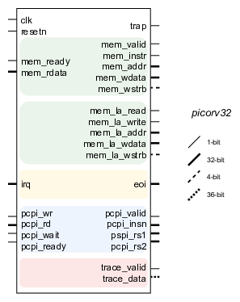
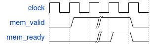
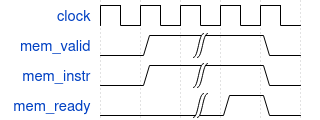
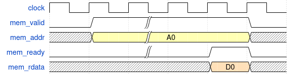
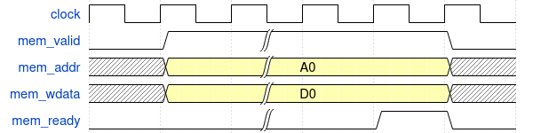
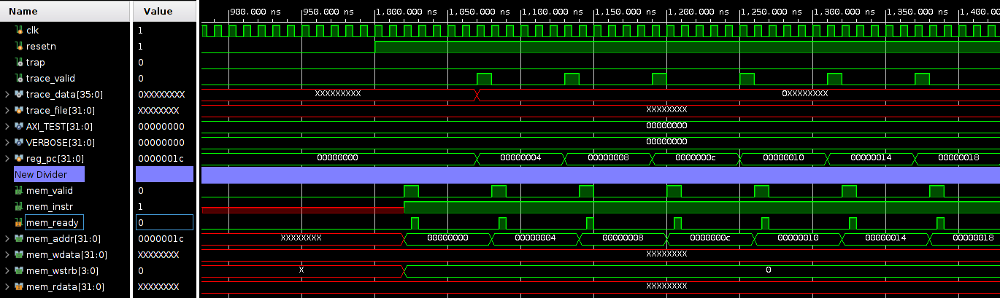

RISC-V is not a processor, but a specification. Of course there is the Internet and plenty of people have made an implementation for this specification. In this course we’ll be working with the <strong>PicoRV32</strong>. The entity (or module) looks like the image below.

The PicoRV32 has a simple memory interface. It allows for a single memory transfer at a time. Every transaction is initiated by the PicoRV32 core, by raising mem_valid. The receiving peer will acknowledge the request through mem_ready.
 A normal memory transfer’s handshake.
 An instruction memory transfer’s handshake.
Upon doing a read transfer mem_wdata is not used and mem_wstrb is fixed at 0x0. The address of which the data is requested is presented at mem_addr. The data that is read is presented back at the PicoRV32 through the mem_rdata bus and is valid simultaneously with mem_ready. 
Upon doing a write transfer mem_rdata is not used and mem_wstrb must be used. The address at which the data is to written is presented at mem_addr. Simultaneously, the mem_wdata presents the value to be stored. The operation is acknowledged by the peer through mem_ready.  The mem_wstrb bus indicates which bytes in the 32-bit word are valid.
Note that not all 16 possible values for mem_wstrb are allowed. Only these values are valid: 0000, 1111, 1100, 0011, 1000, 0100, 0010, and 0001.
Both for the read and write transfers there is no need for a waiting cycle. If the peer (memory) acknowledges, work can continue. Finally, the PicoRV32 core also provides a Look-Ahead Memory Interface that provides all information about the next memory transfer one clock cycle earlier than the normal interface.
In the clock cycle before mem_valid goes high, this interface will output a pulse on mem_la_read or mem_la_write to indicate the start of a read or write transaction in the next clock cycle.
The signals mem_la_read, mem_la_write, and mem_la_addr are driven by combinatorial circuits within the PicoRV32 core. It might be harder to achieve timing closure with the look-ahead interface than with the normal memory interface described above.
The PicoRV32 can be enabled to use interrupts through the parameter ENABLE_IRQ. The build-in interrupt controller supports 32 interrupt inputs (IRQ) which are acknowledged by the PicoRV32 through the end-of-interrupt (eoi) signal.
The IRQ handling features in PicoRV32 do not follow the RISC-V Privileged ISA specification. Instead a small set of very simple custom instructions is used to implement IRQ handling with minimal hardware overhead.
The co-processor interface will be discussed in detail in the next chapter.
Simply creating a Vivado project with the code from the PicoRV32 GitHub repository allows you to run a simulation. As can be seen from the waveforms below, the core starts reading from address 0x0. By default (if no instruction dictates otherwise) the program counter is incremented with 0x4 after every instruction.

The reason for incrementing the address with 4 instead of 1 lies in addressability of bytes. As every address points to a 32-bit word, the smallest unit would be 32 bits. However, sometimes only one byte is targeted. Selecting offsets within a 32-bit word can thus be provided.